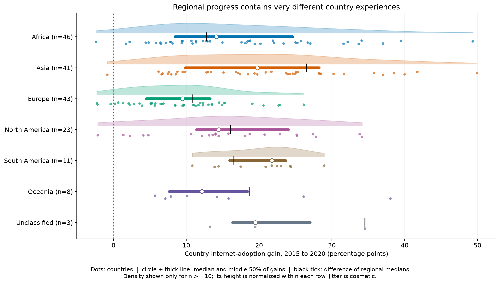
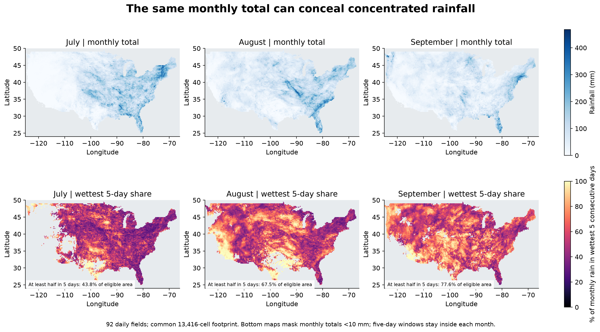
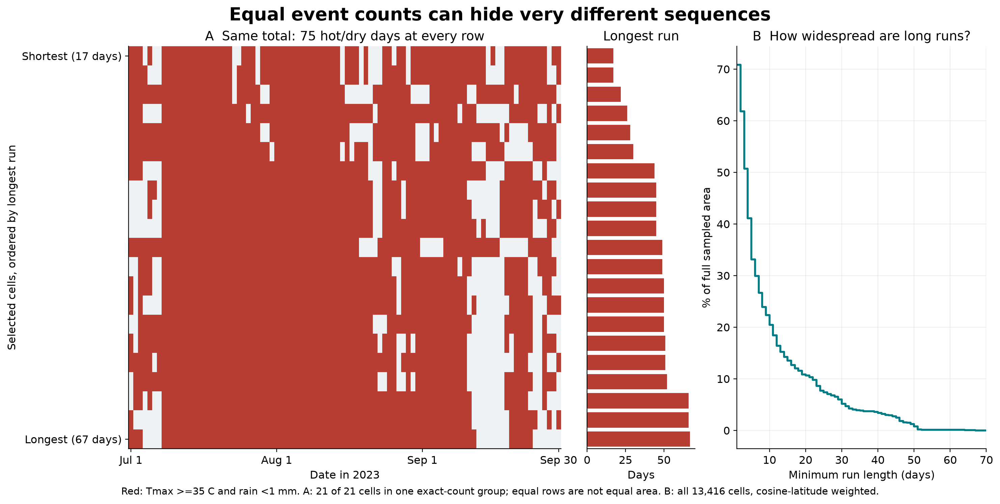

Three research-informed candidates tested on our actual data. These are previews; the 25-page report is unchanged. The strongest replacement is the rainfall total + concentration comparison.

Question: How much do countries differ behind a regional improvement?
How to read: One dot is one matched country; horizontal position is its actual change. The density shows shape, the interval shows heterogeneity, and the black tick reproduces the summary used by the dumbbell.
New evidence: In Asia, the median individual gain is 19.75 points, versus 26.55 for the difference of regional medians. Country gains range from -0.84 to 49.94 points; the middle half spans 9.86 to 28.25.
Limits: Country-weighted observational changes, not causal effects or confidence intervals. Small groups use raw dots without density. Each density is independently normalized and truncated at observed extremes; it is not a population share. Unclassified countries remain visible.
Replacement decision: Strong enhancement to Figure 11: retain a small endpoint panel or its values, and use this view to show the gains behind it. Do not replace required ridgeline variations.

Question: Do similar monthly totals conceal rain arriving in short bursts?
How to read: Top maps retain absolute monthly totals. Bottom maps divide the wettest consecutive five-day sum by the monthly total; all months use shared scales. The ratio describes timing concentration, not flood severity.
New evidence: Among cells receiving at least 10 mm that month, the share of weighted area getting at least half its rain in one five-day window is July 43.8%, August 67.5%, September 77.6%.
Limits: Adapted from the maximum consecutive five-day precipitation idea. This is a within-month diagnostic, not a claim of full climatological Rx5day implementation. Low-total cells are masked only in ratio maps. Daily gridded rain does not establish runoff, flooding, hourly intensity or a climate trend. Windows crossing month boundaries are excluded.
Replacement decision: Strongest replacement: replace Figure 22 with this two-row figure. It retains all three total maps and adds information about timing.

Question: Can the same event frequency conceal isolated days versus a prolonged spell?
How to read: A lasagna-style binary raster preserves daily order for a deliberately chosen equal-count group. Adjacent bars give exact longest runs. The second panel supplies an all-domain area denominator so selected examples cannot imply prevalence.
New evidence: Among 21 cells with exactly 75 hot/dry days, longest runs range from 17 to 67 days. Across the entire footprint, 5.15% of area has a run of at least 30 days and 0.12% has a run of at least 60 days.
Limits: The example group maximizes the range of longest runs among exact-count groups with at least 20 cells and at least 10 hot/dry days. It is illustrative, not representative; up to 60 rows are sampled evenly by run rank. Boundary runs are truncated by July-September. Daily hot/dry conditions are descriptive, not official heatwave or drought diagnoses.
Replacement decision: Useful addition to Figure 29, but do not discard its spatial maps or threshold sensitivity. Prefer a companion figure or a redesigned composite over replacing a required plot.